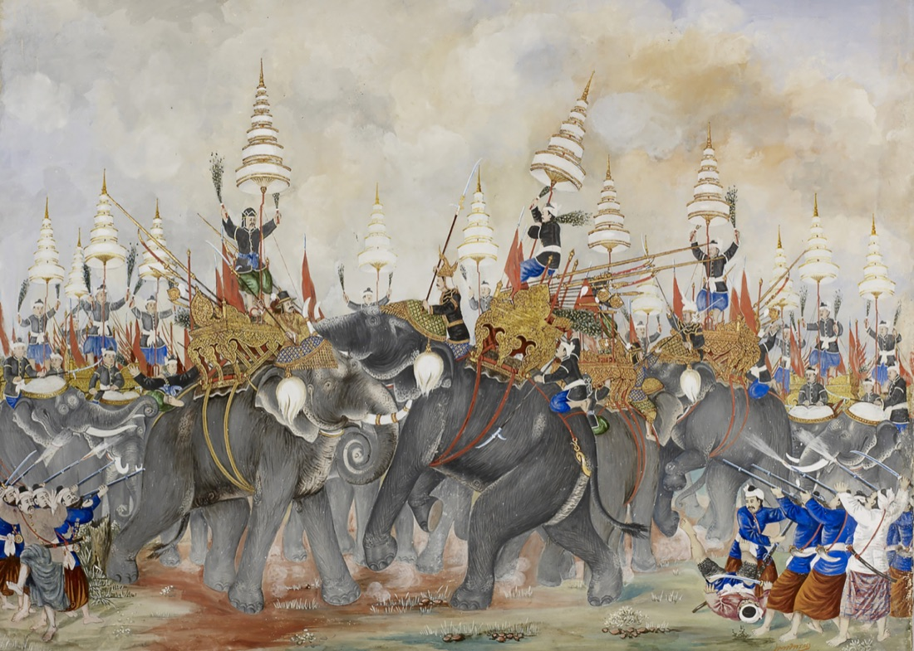
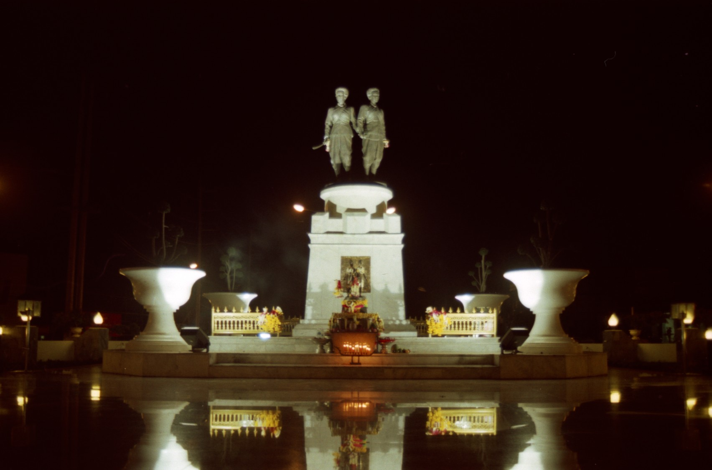
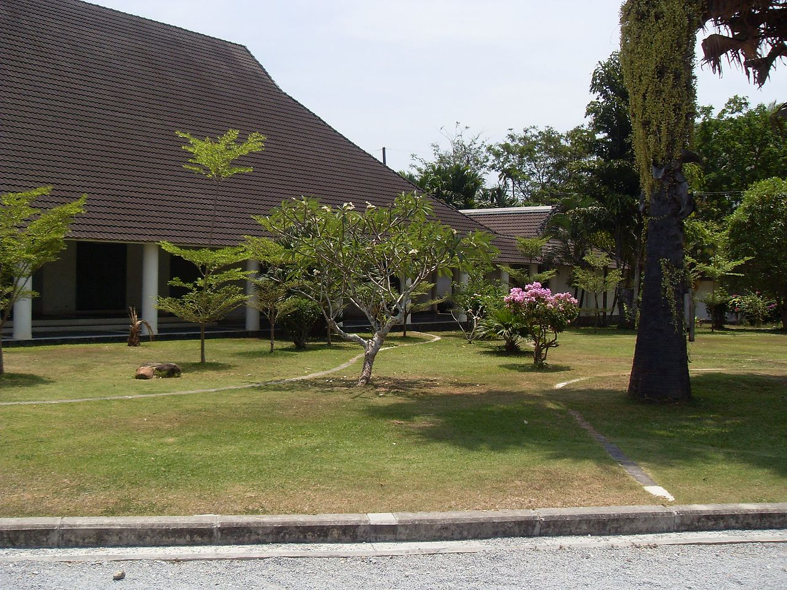

The Heroines
Two sisters, a town with no governor, and a Burmese army at the gates. The story of how Phuket — then called Thalang — was saved.
The island called Thalang
Today the busy part of the island is the centre and south — Phuket Town, the Old Town, the long west-coast beaches at Patong, Karon, and Kata, the piers at Chalong and Rawai. But in 1785 most of that was empty jungle. The capital of the island was a town in the north called Thalang — not far from where the airport stands today.
Thalang was a small but important place. Tin from the rivers nearby was carried down to its harbour and traded to passing ships. European sailors who came to buy that tin called the island Junk Ceylon — a name that still appears on old maps today. The town had a Thai governor, a small fort, two old cannons, and a temple called Phra Nang Sang at its centre.
A war of nine armies
In 1782 a new king took the throne in Bangkok — King Rama I, the first ruler of the Chakri dynasty that still rules Thailand today. He was busy building a new capital on the banks of the Chao Phraya River. To the west, in Burma, a different king had also recently taken power: King Bodawpaya of the Konbaung dynasty. He saw a young Siamese kingdom that had not yet finished rebuilding, and he saw an opportunity.
In late 1785, Bodawpaya sent nine armies against Siam from nine different directions at once. Thai history calls it the Songkhram Kao Thap — the War of Nine Armies. One of those armies — about three thousand men — sailed south from the Burmese port of Mergui along the Andaman coast. They sacked the mainland town of Phang Nga. Then they crossed the narrow channel and landed on the north coast of Phuket, marching on Thalang.

Two sisters
The Burmese could not have picked a worse moment for Thalang. The governor of the town — an official called Phraya Phimon — had just died of illness, only weeks before. The town had no leader.
But the governor's widow was still there. Her name was Khun Ying Chan — Lady Chan — and she was the elder daughter of a respected local family from the village of Baan Khien. Her younger sister, Khun Ying Mook, lived nearby. The two women knew the people of the town. They knew the land. And when news came that the Burmese army had crossed onto the island, they did not wait for help to arrive from Bangkok. They began organising the defence themselves.
They gathered everyone who could carry a weapon — Chan's son Thien, her cousin Thongpun (who became the acting vice-governor), farmers, fishermen, traders, and the women of the town. The two old cannons were rolled out to the gates of the temple. A small number of arquebuses were bought from a British merchant named Francis Light, who traded along this coast. Then they waited.
The siege
The Burmese surrounded the town. What followed was a siege — the slow, patient kind of attack where one side tries to starve the other into surrender. It lasted, by most accounts, about five weeks.
Day after day, the Burmese pressed at the walls. Day after day, Chan and Mook held them off. They were badly outnumbered, but they had two things on their side. The first was the temple itself, whose walls were strong. The second was the monsoon season was ending, and the dry-season heat made the besieging Burmese army's supplies harder to keep fresh.
The women on the walls
The story Phuket still tells of those weeks is this. The town did not have enough soldiers to look like a real garrison from the outside. So Chan and Mook turned to the women of the town. They had hundreds of them cut their hair short in the style men wore. They dressed them in soldiers' clothing. They gave them rolled-up palm leaves shaped to look like the long barrels of muskets.
Each evening, as the light faded, the women paraded along the top of the temple walls. From the Burmese camp below, in the dusk, the garrison looked twice as large as it really was. New "soldiers" kept arriving each night. Coconut husks were burned to make the smell and crackle of musket fire. From inside the walls, the defenders shouted orders to imaginary regiments.
Whether the trick alone broke the Burmese, or whether they were already running out of food and water, the result was the same. On 13 March 1785, after about a month of siege, the Burmese commander gave the order to retreat. His army marched back to the coast and sailed away. Thalang had held.
The title Thao
News of the defence reached Bangkok. King Rama I, hearing what the two sisters had done, did something very rare. He gave them both the rank of Thao — a noble title almost never given to women in Thai history — and with it, two formal names that the island still uses today.
Chan lived another seven years and died in 1792. Mook outlived her sister by several more. Neither was a soldier by training, and neither asked for the titles she was given. But more than two centuries later, their names are still everywhere on this island — the road you take to the airport is named for one of them, and the district you drive through is named for the other.

What you can still see today
- The Heroines' Monument — at the Tha Ruea roundabout on Highway 402, about twelve kilometres north of Phuket Town. Bronze figures of the two sisters, back to back, swords raised. Completed in 1967 by the Thai sculptor Sanan Silakorn.
- Thepkasattri Road — Highway 402, the main road from the airport down to Phuket Town, is named after the elder sister. You almost certainly drive on it the moment you leave the airport.
- Si Sunthon — the subdistrict (tambon) where the monument stands is named after the younger sister.
- The Thalang National Museum — a short walk from the monument. Opened in 1985 to mark the 200th anniversary of the battle, it holds artefacts from old Thalang, the siege, and the island's prehistory.
- The Heroines' Memorial Fair — held each year around 13 March in Thalang District, with parades, historical re-enactments, and offerings at the monument.
- The provincial seal — Phuket's official emblem itself shows the two sisters, swords raised, just as the monument does.

A note on the dates and names. The version above follows the way the story is traditionally told and remembered on Phuket itself — the version painted on the monument and celebrated at the annual fair. Some scholars place the Burmese retreat in March 1786 rather than 1785 (the war ran across both years), and the Burmese commander's name is sometimes given as Yi Wun, which is almost certainly a Thai rendering of the Burmese title Wungyi, meaning "great minister." The shape of the story — a town with no governor, two sisters who organised its defence, a siege that lasted about a month, and a king's rare honour afterwards — is the part that has been remembered for two and a half centuries.